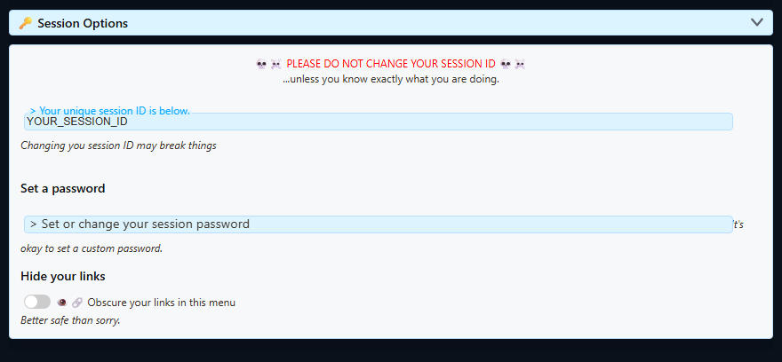
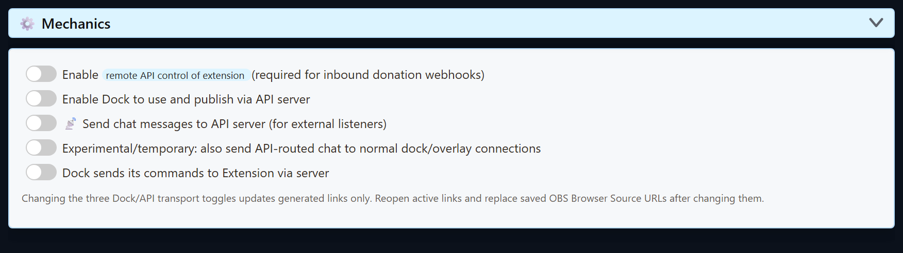

The Connection Model
- A source captures chat or an event and publishes it to a Social Stream session.
- The Dock, Featured overlay, Multi Alerts, Event Flow, and other pages join that same session.
- If a password is set, every joining page must use the same password.
- If server routing is enabled, the active pages must use the newly generated URLs with the matching routing parameters.
Source → same session ID + password + routing mode → Dock / overlay / API consumerSession ID And Password
Open Global settings and tools → Session Options to view the current session ID and set an optional password.

| Value | Rule |
|---|---|
| Session ID | Keep it unchanged unless you intend to replace every source, dock, overlay, and integration URL that uses it. |
| Password | Optional, but must match everywhere once set. Copy newly generated links after adding or changing it. |
| Generated link | Treat the whole link as private when it includes a password or other sensitive parameters. |
Prefer copying generated URLs. They already include the current session, password, page version, and supported routing options. Hand-edited links are a common source of blank pages.
Enable Server Fallback For Reading And Replying
Use this when the Dock or unified chat connects but messages do not arrive, or when replies fail because the normal peer-to-peer path is blocked or unreliable.
The two fallback controls work as a pair: Send chat messages to API server (for external listeners) carries incoming chat to the server path, while Dock sends its commands to Extension via server carries replies and Dock commands back.
Quick Method
- Open or reload the generated Dock link.
- Send a fake test message from Social Stream Ninja.
- If the Enable Server Fallback notice appears, select it and confirm. Social Stream Ninja enables the incoming-chat and reply-command server paths together.
- Copy the newly generated Dock and overlay links. Reopen normal browser windows and replace any saved OBS Browser Source URLs.
Manual Method In The Desktop App
- Open the Social Stream desktop app. In the right-side Sources and Settings panel, expand Global settings and tools.
- Expand Mechanics - Connections & Integrations.
- Turn on Send chat messages to API server (for external listeners). This is the incoming chat/read path.
- Turn on Dock sends its commands to Extension via server. This is the reply/control path.
- Copy and reopen the newly generated links. Old open pages and saved OBS URLs do not update themselves.

Do not enable every server option. Enable remote API control, Enable Dock to use and publish via API server, and the temporary additive-delivery option are not required for the normal read-and-reply fallback. Additive delivery can produce duplicate messages.
Default, Relay, And API Server Modes
| Control | What It Changes | When To Use It |
|---|---|---|
| Default links | Normal Social Stream peer/session transport, with no server flag added. | Most single-computer and normal OBS setups. |
| Enable remote API control of extension | Enables extension HTTP/WebSocket control and inbound webhook handling. | External apps, Stream Deck/API control, or supported inbound donation webhooks. |
| Enable Dock to use and publish via API server | Adds the page's server routing where supported. |
The Dock/Featured workflow needs remote API-server control instead of its normal path. |
| Send chat messages to API server | Routes captured chat to the API-server listener path and adds server2 to supported generated links. |
The Dock needs server fallback for incoming chat, or Python, Node, or another external WebSocket listener must receive chat. |
| Also send API-routed chat normally | Temporary additive delivery through both paths. | Only during a deliberate mixed-mode transition; it can duplicate messages. |
| Dock commands via server | Adds server3 where supported so Dock commands return through the server path. |
Peer connections are blocked or unreliable and Dock-to-extension commands need the server. |
About localserver
Some pages accept localserver and use a local WebSocket endpoint at ws://127.0.0.1:3000. Add localserverport=PORT to select another port between 1024 and 65535. Invalid or omitted values safely fall back to port 3000. Note that new installs of the Social Stream desktop app run their local server on port 3003 instead, and stamp localserverport=3003 into the links they generate — so if you hand-write a URL against a new install, add that parameter yourself. Add these parameters only when that local server is actually running and the exact page supports them.
For screenshots and step-by-step hosted WebSocket or advanced Local Server setup, see Hosted WebSocket and Local Server Modes.
Routing parameters are page-specific. server, server2, server3, localserver, and localserverport do not have one universal behavior on every overlay. Use the generated URL for the exact page rather than copying flags from a different tool.
After Changing A Session Or Routing Toggle
- Copy the newly generated Dock or overlay URL.
- Close and reopen active browser pages that use the old URL.
- Replace the URL in saved OBS Browser Sources and refresh their cache.
- Reload or reactivate source pages if the session ID or password changed.
- Send one fake test message and confirm it reaches the Dock before testing the final overlay.
Blank Dock Or Overlay Checklist
- Compare the complete
session=value on the source, Dock, and overlay. - Check whether one URL is missing the current
password=. - Check whether an old OBS URL lacks the current server routing flags.
- Remove manually added routing flags and copy a fresh generated URL if the modes are unclear.
- Test the Dock first. If the Dock receives messages, troubleshoot the overlay's event filters and URL options next.
- See OBS Troubleshooting and the Commands & API reference for deeper checks.